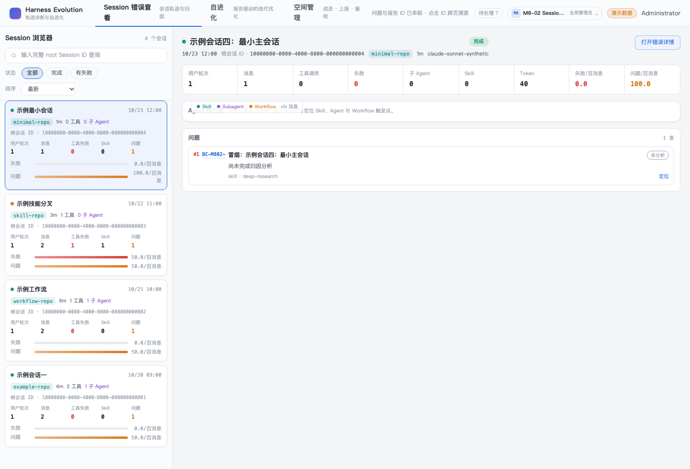
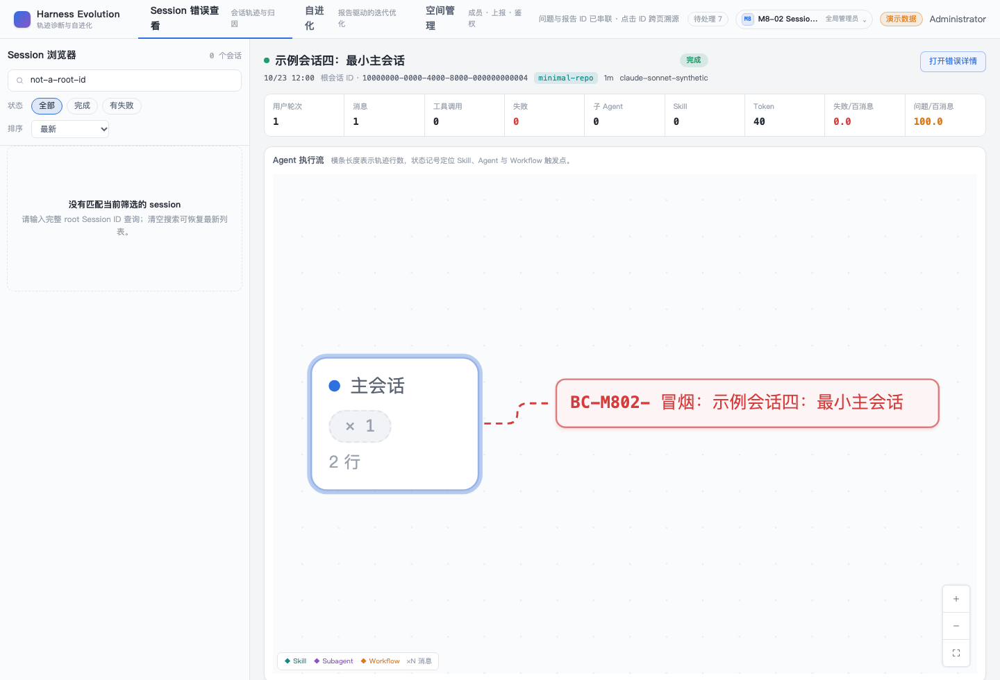
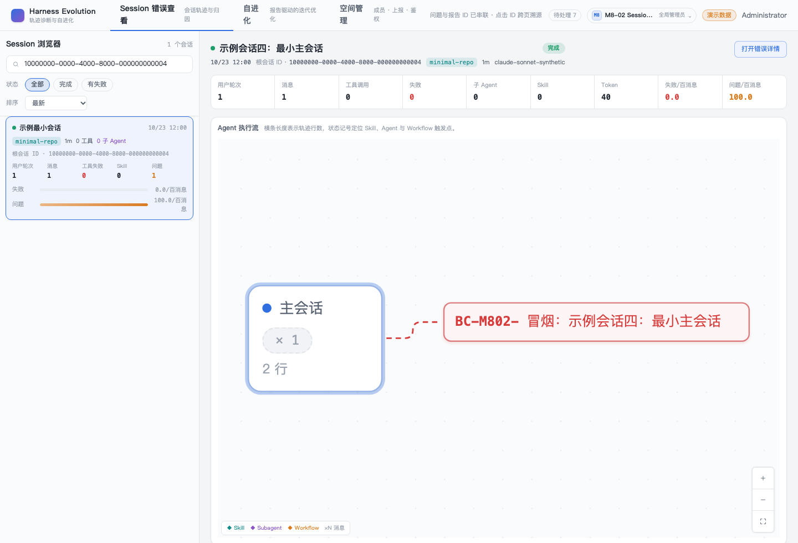
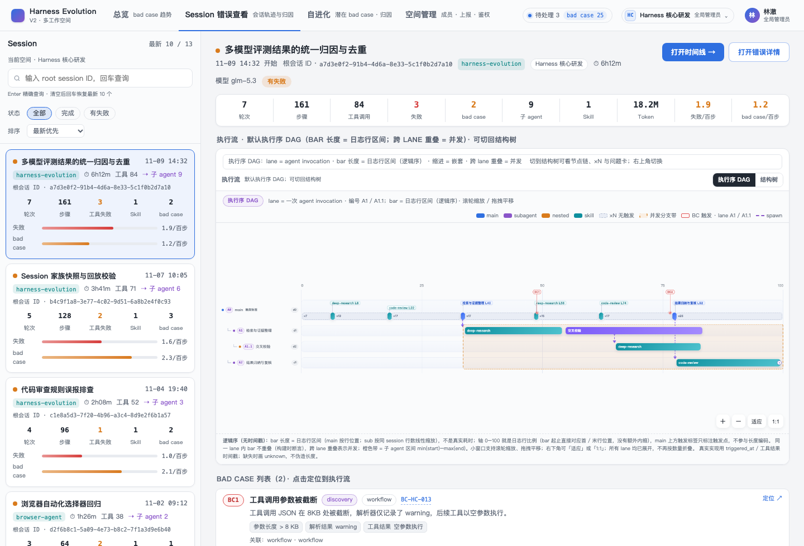

- 分支
- agent/develop-m8-02-140cb6e5db5d
- 提交
- 7bc6680（PR #267 head）
- 应用
- harness-evolution web + api（sqlite, demo fixtures）
- 测试方式
- 真实 API + Vite proxy + CDP 无头 Chrome
- 数据
- fixtures:seed 4 个 Session + 1 个待同步根（2 条 case）
Harness Evolution · M8 空间数据面与总览
m8-02 空间 Session 投影集成冒烟报告
在真实 API（SQLite + demo fixtures）+ Vite proxy + 无头 Chrome 中验证空间 Session 投影：默认列表、total/pendingSessions、完整 root ID 精确命中、子串不命中、跨空间不泄漏、V1 冻结端点仍支持标题模糊搜索，并核对 Session 页搜索文案与原型。
5API 场景
3页面状态截图
0未解决缺陷
Environment and Artifact
2026-11-16 · macOS · Chrome headless · 1440×980Scenario Matrix
7 pass| # | 场景 | 结果 | 说明 | 证据 |
|---|---|---|---|---|
| 01 | 默认列表、total 与 pendingSessions | PASS | 4 条已归一化 Session + 1 个待同步根（2 条 bad case）；默认 items=4、total=4、pendingSessions=1。 | — |
| 02 | 完整 root ID 精确命中 | PASS | q=完整 root ID → 1 条，total=1；pendingSessions 与查询无关，仍为 1。 | — |
| 03 | 子串不命中 | PASS | q=ID 前 8 位 → items=[]、total=0，证明 V2 是精确查询而非模糊搜索。 | — |
| 04 | 跨空间精确查询不泄漏 | PASS | 在对照空间查询只属于工作空间的 root ID → items=[]、total=0。 | — |
| 05 | V1 冻结端点仍支持标题模糊搜索 | PASS | V1 q="示例会话" 仍按标题命中；响应新增 total/pendingSessions 为 additive。 | — |
| 06 | Session 页搜索文案 | PASS | placeholder/aria 明确要求完整 root Session ID；未命中空态提示输入完整 ID 或清空恢复列表。 | 01-session-page.png 02-search-miss.png |
| 07 | 完整 root ID 命中页面 | PASS | 输入完整 root ID 后左侧只剩 1 张卡片，与 API 精确查询一致。 | 03-exact-hit.png |
Issues and Observations
P3 回车交互与「最新 10 条」标题留给 m8-05回车交互与「最新 10 条」标题留给 m8-05
- 实际
- 当前仍为 300ms 防抖查询；placeholder 已改为完整 root ID，但未要求回车。
- 预期
- 设计 08 §5.2.1：回车触发、标题显示「最新 10 / 总数 N」与待同步角标。
- 根因
- m8-02 交付边界是 API 投影；m8-05 负责页面交互与标题。原型已按目标交互展示。
已记录 · 待 m8-05
Evidence
4 screenshots



Automated Coverage Assessment
3 areas reviewed| 区域 | 覆盖 | 结论 | 建议 |
|---|---|---|---|
| 投影与计数 | API 测试 + 本冒烟 | items/total/pending 与种子数据一致，pending 按根去重。 | 保留 MySQL lane 的正确性用例。 |
| 精确 vs 模糊 | API 测试 + 本冒烟 | V2 完整 ID 命中、子串为空；V1 仍按标题模糊。 | m8-05 把回车交互补齐后，再补页面级精确查询 E2E。 |
| 页面文案 | 本冒烟截图 | 过渡期文案已诚实，输入完整 ID 可查到目标 Session。 | m8-05 落地回车与标题角标，回到原型交互。 |
Conclusion
通过（含 1 项已记录后续）5 个 API 场景与 3 个页面状态全部通过；回车/最新 10 条标题作为 m8-05 的明确后续。
- 截图来自真实 API + 浏览器；原型截图仅作交互对照。
- 过渡期标题/仓库搜索不再被文案承诺；完整 root ID 可正常使用。
由 m8-02 集成冒烟生成；不写入仓库。